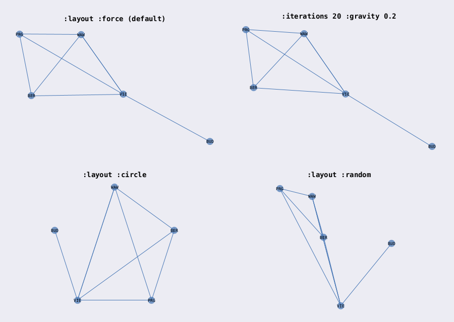
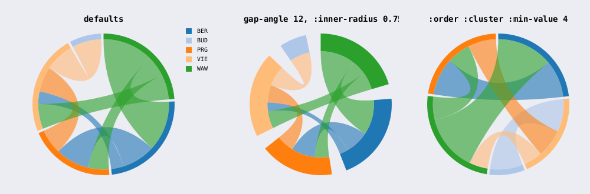
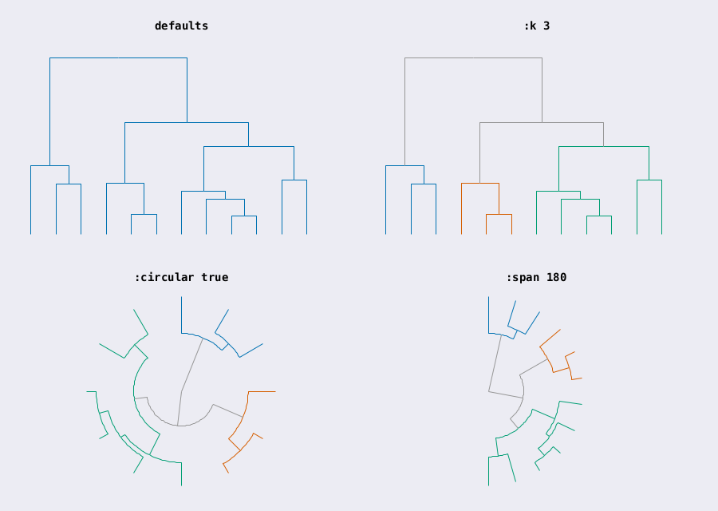
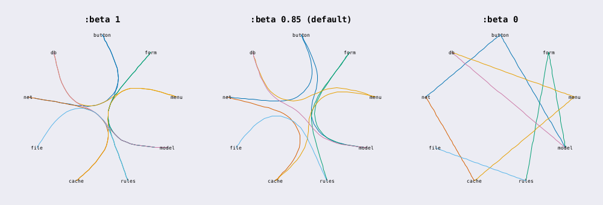
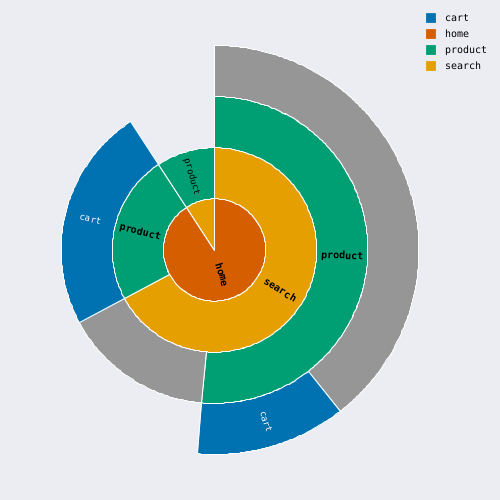

28 Graphs and trees
These functions build graphs and trees from edges, adjacency matrices, parent links, level columns or clusterings, and lay them out as rows: node positions, edge paths, ring sectors and bands. Use them to draw graphs and trees with ordinary charts; the graph and tree builders call them.
(ns reference.data-graphs-trees
(:require [fastmath.ml.clustering :as cl]
[fastmath.random :as r]
[fastmath.stats :as stats]
[cljplot2.chart :as chart]
[cljplot2.core :as plot]
[cljplot2.data.graph :as graph]
[cljplot2.data.hierarchy :as hierarchy]
[cljplot2.data.tree :as tree]
[cljplot2.describe :as describe]
[notebook-utils :as nu]))The tables below hold made-up flight counts between airports, and the airports as node rows; the graph sections use them:
(def flights [{:src "WAW" :dst "BER" :n 12} {:src "WAW" :dst "PRG" :n 5} {:src "BER" :dst "PRG" :n 8}
{:src "PRG" :dst "VIE" :n 6} {:src "VIE" :dst "WAW" :n 4} {:src "BER" :dst "VIE" :n 3}
{:src "WAW" :dst "VIE" :n 2} {:src "BUD" :dst "VIE" :n 7}])| src | dst | n |
|---|---|---|
| WAW | BER | 12 |
| WAW | PRG | 5 |
| BER | PRG | 8 |
| PRG | VIE | 6 |
| VIE | WAW | 4 |
| BER | VIE | 3 |
| WAW | VIE | 2 |
| BUD | VIE | 7 |
(def airports [{:code "WAW" :city "Warsaw"} {:code "BER" :city "Berlin"} {:code "PRG" :city "Prague"}
{:code "VIE" :city "Vienna"} {:code "BUD" :city "Budapest"} {:code "KRK" :city "Krakow"}])| code | city |
|---|---|
| WAW | Warsaw |
| BER | Berlin |
| PRG | Prague |
| VIE | Vienna |
| BUD | Budapest |
| KRK | Krakow |
The matrix below holds made-up counts of projects four teams share; the adjacency section uses it:
(def shared-projects [[0 3 1 0] [3 0 2 4] [1 2 0 0] [0 4 0 0]])The table below holds made-up stages of a web shop with their columns; the sankey section uses it:
(def stages [{:id "visit" :stage 0} {:id "search" :stage 1} {:id "browse" :stage 1} {:id "cart" :stage 2} {:id "buy" :stage 3}])| id | stage |
|---|---|
| visit | 0 |
| search | 1 |
| browse | 1 |
| cart | 2 |
| buy | 3 |
The table below holds made-up passenger counts by class, sex and survival; the alluvial section uses it:
(def passengers [{:class "1st" :sex "f" :survived "yes" :n 140} {:class "1st" :sex "m" :survived "no" :n 118}
{:class "2nd" :sex "f" :survived "yes" :n 80} {:class "2nd" :sex "m" :survived "no" :n 154}
{:class "3rd" :sex "f" :survived "no" :n 106} {:class "3rd" :sex "m" :survived "no" :n 422}
{:class "3rd" :sex "f" :survived "yes" :n 90} {:class "1st" :sex "m" :survived "yes" :n 62}])| class | sex | survived | n |
|---|---|---|---|
| 1st | f | yes | 140 |
| 1st | m | no | 118 |
| 2nd | f | yes | 80 |
| 2nd | m | no | 154 |
| 3rd | f | no | 106 |
| 3rd | m | no | 422 |
| 3rd | f | yes | 90 |
| 1st | m | yes | 62 |
The table below holds twelve mtcars cars; the clustering sections use it:
Data: Motor Trend car road tests (1974), R datasets package mtcars (Henderson & Velleman 1981); licence: Part of R (GPL-2 | GPL-3).
(def mtcars (take 12 (nu/dataset :mtcars)))| model | mpg | cyl | disp | hp | drat | wt | qsec | vs | am | gear | carb |
|---|---|---|---|---|---|---|---|---|---|---|---|
| Mazda RX4 | 21 | 6 | 160 | 110 | 3.9 | 2.62 | 16.46 | 0 | 1 | 4 | 4 |
| Mazda RX4 Wag | 21 | 6 | 160 | 110 | 3.9 | 2.875 | 17.02 | 0 | 1 | 4 | 4 |
| Datsun 710 | 22.8 | 4 | 108 | 93 | 3.85 | 2.32 | 18.61 | 1 | 1 | 4 | 1 |
| Hornet 4 Drive | 21.4 | 6 | 258 | 110 | 3.08 | 3.215 | 19.44 | 1 | 0 | 3 | 1 |
| Hornet Sportabout | 18.7 | 8 | 360 | 175 | 3.15 | 3.44 | 17.02 | 0 | 0 | 3 | 2 |
| Valiant | 18.1 | 6 | 225 | 105 | 2.76 | 3.46 | 20.22 | 1 | 0 | 3 | 1 |
| Duster 360 | 14.3 | 8 | 360 | 245 | 3.21 | 3.57 | 15.84 | 0 | 0 | 3 | 4 |
| Merc 240D | 24.4 | 4 | 146.7 | 62 | 3.69 | 3.19 | 20 | 1 | 0 | 4 | 2 |
| Merc 230 | 22.8 | 4 | 140.8 | 95 | 3.92 | 3.15 | 22.9 | 1 | 0 | 4 | 2 |
| Merc 280 | 19.2 | 6 | 167.6 | 123 | 3.92 | 3.44 | 18.3 | 1 | 0 | 4 | 4 |
| Merc 280C | 17.8 | 6 | 167.6 | 123 | 3.92 | 3.44 | 18.9 | 1 | 0 | 4 | 4 |
| Merc 450SE | 16.4 | 8 | 275.8 | 180 | 3.07 | 4.07 | 17.4 | 0 | 0 | 3 | 3 |
The vectors defined below hold the twelve cars standardized on four variables; the clustering sections use them:
(def car-features (let [cols (for [k [:mpg :hp :wt :qsec]] (stats/standardize (map k mtcars)))]
(apply mapv vector cols)))The table below holds made-up offices by region and country; the level and node-link sections use it:
(def offices [{:region "Europe" :country "Poland" :city "Warsaw"} {:region "Europe" :country "Poland" :city "Krakow"}
{:region "Europe" :country "Czechia" :city "Prague"} {:region "Asia" :country "Japan" :city "Tokyo"}
{:region "Asia" :country "Japan" :city "Osaka"} {:region "Asia" :country "India" :city "Pune"}])| region | country | city |
|---|---|---|
| Europe | Poland | Warsaw |
| Europe | Poland | Krakow |
| Europe | Czechia | Prague |
| Asia | Japan | Tokyo |
| Asia | Japan | Osaka |
| Asia | India | Pune |
The table below holds a made-up company’s employees with their bosses; the parent sections use it:
(def org [{:emp 1 :boss nil :who "CEO"} {:emp 2 :boss 1 :who "CTO"} {:emp 3 :boss 1 :who "CFO"}
{:emp 4 :boss 2 :who "dev lead"} {:emp 5 :boss 2 :who "ops lead"} {:emp 6 :boss 4 :who "developer"}])| emp | boss | who |
|---|---|---|
| 1 | CEO | |
| 2 | 1 | CTO |
| 3 | 1 | CFO |
| 4 | 2 | dev lead |
| 5 | 2 | ops lead |
| 6 | 4 | developer |
The tables below hold a made-up program’s modules with their parents, and the modules’ imports; the bundling section uses them:
(def modules [{:id "app"} {:id "ui" :parent "app"} {:id "core" :parent "app"} {:id "io" :parent "app"}
{:id "button" :parent "ui"} {:id "form" :parent "ui"} {:id "menu" :parent "ui"}
{:id "model" :parent "core"} {:id "rules" :parent "core"} {:id "cache" :parent "core"}
{:id "file" :parent "io"} {:id "net" :parent "io"} {:id "db" :parent "io"}])| id | parent |
|---|---|
| app | |
| ui | app |
| core | app |
| io | app |
| button | ui |
| form | ui |
| menu | ui |
| model | core |
| rules | core |
| cache | core |
| file | io |
| net | io |
| db | io |
(def imports [{:module "button" :uses "model"} {:module "form" :uses "rules"} {:module "form" :uses "model"}
{:module "menu" :uses "cache"} {:module "model" :uses "db"} {:module "rules" :uses "file"}
{:module "cache" :uses "net"} {:module "button" :uses "net"} {:module "menu" :uses "db"}])| module | uses |
|---|---|
| button | model |
| form | rules |
| form | model |
| menu | cache |
| model | db |
| rules | file |
| cache | net |
| button | net |
| menu | db |
The table below holds made-up visits to a web shop, as page sequences with counts; the sequence section uses it:
(def visits [{:path "home>search>product>end" :n 30} {:path "home>search>end" :n 12}
{:path "home>product>cart>end" :n 18} {:path "home>search>product>cart" :n 9}
{:path "search>product>end" :n 7}])| path | n |
|---|---|
| home>search>product>end | 30 |
| home>search>end | 12 |
| home>product>cart>end | 18 |
| home>search>product>cart | 9 |
| search>product>end | 7 |
28.1 Graphs
graph/graph builds the graph of edge rows: the nodes with their degrees, the given node rows first, and the edges with numeric weights. Use it as the input of the graph layouts.
edges– The edge rows, one per edge.Columns::from– The source node's id; the option:fromnames another column.:to– The target node's id; the option:tonames another column.:value– The weight, a finite number zero or greater; the option:valuenames another column. Optional: a missing weight counts as 1.
{:nodes :edges :loops :directed :dropped}: the nodes with their degrees (:degree, :in, :out), the edges with numeric weights, self-loops under :loops, and the number of edges with a missing end.These options name the edge and node columns and set the direction. The table below holds the nodes of the flights as a directed graph with the airports as node rows; Krakow has no flights, so its degree is 0:
(nu/result-table (:nodes (graph/graph flights {:from :src :to :dst :value :n :nodes airports :id :code :directed true})))| code | city | id | degree | in | out |
|---|---|---|---|---|---|
| WAW | Warsaw | WAW | 4 | 1 | 3 |
| BER | Berlin | BER | 3 | 1 | 2 |
| PRG | Prague | PRG | 3 | 2 | 1 |
| VIE | Vienna | VIE | 5 | 4 | 1 |
| BUD | Budapest | BUD | 1 | 0 | 1 |
| KRK | Krakow | KRK | 0 | 0 | 0 |
The next table holds the edges of the flights as an undirected graph, the weights from :n under :value:
(nu/result-table (:edges (graph/graph flights {:from :src :to :dst :value :n :directed false})))| src | dst | n | from | to | value |
|---|---|---|---|---|---|
| WAW | BER | 12 | WAW | BER | 12.0 |
| WAW | PRG | 5 | WAW | PRG | 5.0 |
| BER | PRG | 8 | BER | PRG | 8.0 |
| PRG | VIE | 6 | PRG | VIE | 6.0 |
| VIE | WAW | 4 | VIE | WAW | 4.0 |
| BER | VIE | 3 | BER | VIE | 3.0 |
| WAW | VIE | 2 | WAW | VIE | 2.0 |
| BUD | VIE | 7 | BUD | VIE | 7.0 |
Without a :value column every edge weighs 1:
(nu/result-table (:edges (graph/graph flights {:from :src :to :dst})))| src | dst | n | from | to | value |
|---|---|---|---|---|---|
| WAW | BER | 12 | WAW | BER | 1.0 |
| WAW | PRG | 5 | WAW | PRG | 1.0 |
| BER | PRG | 8 | BER | PRG | 1.0 |
| PRG | VIE | 6 | PRG | VIE | 1.0 |
| VIE | WAW | 4 | VIE | WAW | 1.0 |
| BER | VIE | 3 | BER | VIE | 1.0 |
| WAW | VIE | 2 | WAW | VIE | 1.0 |
| BUD | VIE | 7 | BUD | VIE | 1.0 |
28.2 Network layouts
graph/layout places the nodes of a graph in the unit square and gives every edge the positions of both ends. Use it to draw a network: segments for the edges, points for the nodes.
g– A graph ofgraph/graph.
:x and :y on its nodes and :x :y :xend :yend on its edges and loops, in the unit square.These options choose the placement and tune the force layout. The table below holds the placed nodes, :x and :y added:
(nu/result-table (:nodes (graph/layout (graph/graph flights {:from :src :to :dst :value :n})
{:rng (r/rng :mersenne 3)})))| id | degree | in | out | x | y |
|---|---|---|---|---|---|
| WAW | 4 | 4 | 4 | 0.3234363307746476 | 0.7801850395367322 |
| BER | 3 | 3 | 3 | 0.06158553022006996 | 0.4588596042823668 |
| PRG | 3 | 3 | 3 | 0.0 | 0.7826090954673459 |
| VIE | 5 | 5 | 5 | 0.544727205118378 | 0.46653057775449486 |
| BUD | 1 | 1 | 1 | 1.0 | 0.21739090453265397 |
The panels below draw the edges as segments and the nodes as points. The first one takes the seeded force layout, the same on every build; the second one stops after 20 iterations with a weaker pull to the centre; the last two place the nodes on a circle and at random:
(plot/render-image (plot/arrange (for [[title laid]
[[":layout :force (default)"
(graph/layout (graph/graph flights {:from :src :to :dst :value :n})
{:rng (r/rng :mersenne 3)})]
[":iterations 20 :gravity 0.2"
(graph/layout (graph/graph flights {:from :src :to :dst :value :n})
{:layout :force :iterations 20 :gravity 0.2 :rng (r/rng :mersenne 3)})]
[":layout :circle"
(graph/layout (graph/graph flights {:from :src :to :dst :value :n}) {:layout :circle})]
[":layout :random"
(graph/layout (graph/graph flights {:from :src :to :dst :value :n})
{:layout :random :rng (r/rng :mersenne 3)})]]]
{:charts [(chart/segment {:data (:edges laid) :mapping {:x :x :y :y :xend :xend :yend :yend}})
(chart/scatter {:data (:nodes laid) :mapping {:x :x :y :y} :size 14})
(chart/text {:data (:nodes laid) :mapping {:x :x :y :y :label :id} :size 8})]
:aspect :iso
:scales {:x {:axis false} :y {:axis false}}
:labels {:title title}})
{:columns 2})
{:width 900 :height 640})
28.3 Adjacency matrices
graph/adjacency->edges turns a square matrix of weights between named nodes into edge rows; a zero or missing cell is no edge. Use it for graphs stored as matrices.
matrix– A square matrix of weights, a sequence of rows: row i, column j holds the weight from node i to node j.names– The node names, a vector with one per row and column, in order.
{:from :to :value} for graph/graph, row by row; a zero, missing or non-finite cell is no edge.This option chooses which cells the function reads. The first table below reads the shared projects whole, each pair twice; the second one reads only the upper triangle, each pair once:
(nu/result-table (graph/adjacency->edges shared-projects ["design" "backend" "data" "ops"]))| from | to | value |
|---|---|---|
| design | backend | 3 |
| design | data | 1 |
| backend | design | 3 |
| backend | data | 2 |
| backend | ops | 4 |
| data | design | 1 |
| data | backend | 2 |
| ops | backend | 4 |
(nu/result-table (graph/adjacency->edges shared-projects ["design" "backend" "data" "ops"] {:whole-matrix false}))| from | to | value |
|---|---|---|
| design | backend | 3 |
| design | data | 1 |
| backend | data | 2 |
| backend | ops | 4 |
28.4 Arc layouts
graph/arc-layout lays out an arc diagram: the nodes on a line at 0, 1, … in node order, and every edge as rows along a semicircle between its ends. Use it to draw an arc diagram of your own.
g– A graph ofgraph/graph.
{:nodes :arcs}: the nodes with :x and :y on a line, and the arcs as rows {:edge :from :to :value :x :y} along each edge's semicircle.This option sets the node order. The table below holds the arcs: rows along each edge’s semicircle, with the edge’s index under :edge:
(nu/result-table (:arcs (graph/arc-layout (graph/graph flights {:from :src :to :dst :value :n}))))| edge | from | to | value | x | y |
|---|---|---|---|---|---|
| 0 | WAW | BER | 12.0 | 0.0 | 3.061616997868383E-17 |
| 0 | WAW | BER | 12.0 | 3.0458649045211894E-4 | 0.01744974835125054 |
| 0 | WAW | BER | 12.0 | 0.0012179748700879012 | 0.03487823687206273 |
| 0 | WAW | BER | 12.0 | 0.002739052315863355 | 0.05226423163382673 |
| 0 | WAW | BER | 12.0 | 0.004865965629214819 | 0.06958655048003273 |
| 0 | WAW | BER | 12.0 | 0.00759612349389599 | 0.08682408883346521 |
| 0 | WAW | BER | 12.0 | 0.010926199633097211 | 0.10395584540887973 |
| 0 | WAW | BER | 12.0 | 0.014852136862001764 | 0.12096094779983384 |
| 0 | WAW | BER | 12.0 | 0.019369152030840553 | 0.13781867790849958 |
| 0 | WAW | BER | 12.0 | 0.024471741852423234 | 0.15450849718747373 |
| 0 | WAW | BER | 12.0 | 0.03015368960704584 | 0.1710100716628344 |
| 0 | WAW | BER | 12.0 | 0.03640807271660634 | 0.1873032967079561 |
| 0 | WAW | BER | 12.0 | 0.04322727117869957 | 0.2033683215379001 |
| 0 | WAW | BER | 12.0 | 0.05060297685041648 | 0.21918557339453873 |
| 0 | WAW | BER | 12.0 | 0.05852620357053656 | 0.23473578139294543 |
| 0 | WAW | BER | 12.0 | 0.06698729810778065 | 0.24999999999999994 |
| 0 | WAW | BER | 12.0 | 0.07597595192178702 | 0.26495963211660245 |
| 0 | WAW | BER | 12.0 | 0.08548121372247913 | 0.2795964517353734 |
| 0 | WAW | BER | 12.0 | 0.09549150281252627 | 0.29389262614623657 |
| 0 | WAW | BER | 12.0 | 0.10599462319663905 | 0.30783073766282915 |
| 0 | WAW | BER | 12.0 | 0.116977778440511 | 0.3213938048432697 |
| 0 | WAW | BER | 12.0 | 0.12842758726130293 | 0.3345653031794291 |
| 0 | WAW | BER | 12.0 | 0.14033009983067446 | 0.3473291852294986 |
| 0 | WAW | BER | 12.0 | 0.15267081477050132 | 0.35966990016932554 |
| 0 | WAW | BER | 12.0 | 0.16543469682057088 | 0.3715724127386971 |
| 0 | WAW | BER | 12.0 | 0.17860619515673037 | 0.383022221559489 |
| 0 | WAW | BER | 12.0 | 0.19216926233717085 | 0.39400537680336095 |
| 0 | WAW | BER | 12.0 | 0.20610737385376343 | 0.4045084971874737 |
| 0 | WAW | BER | 12.0 | 0.2204035482646266 | 0.41451878627752087 |
| 0 | WAW | BER | 12.0 | 0.23504036788339755 | 0.42402404807821303 |
| 0 | WAW | BER | 12.0 | 0.25 | 0.4330127018922193 |
| 0 | WAW | BER | 12.0 | 0.2652642186070546 | 0.4414737964294635 |
| 0 | WAW | BER | 12.0 | 0.2808144266054613 | 0.4493970231495835 |
| 0 | WAW | BER | 12.0 | 0.2966316784620998 | 0.45677272882130043 |
| 0 | WAW | BER | 12.0 | 0.3126967032920439 | 0.4635919272833937 |
| 0 | WAW | BER | 12.0 | 0.3289899283371656 | 0.46984631039295416 |
| 0 | WAW | BER | 12.0 | 0.3454915028125263 | 0.47552825814757677 |
| 0 | WAW | BER | 12.0 | 0.36218132209150045 | 0.48063084796915945 |
| 0 | WAW | BER | 12.0 | 0.3790390522001662 | 0.48514786313799824 |
| 0 | WAW | BER | 12.0 | 0.3960441545911204 | 0.48907380036690284 |
| 0 | WAW | BER | 12.0 | 0.41317591116653485 | 0.492403876506104 |
| 0 | WAW | BER | 12.0 | 0.4304134495199673 | 0.4951340343707852 |
| 0 | WAW | BER | 12.0 | 0.4477357683661733 | 0.49726094768413664 |
| 0 | WAW | BER | 12.0 | 0.4651217631279374 | 0.49878202512991215 |
| 0 | WAW | BER | 12.0 | 0.4825502516487495 | 0.4996954135095479 |
| 0 | WAW | BER | 12.0 | 0.5 | 0.5 |
| 0 | WAW | BER | 12.0 | 0.5174497483512503 | 0.4996954135095479 |
| 0 | WAW | BER | 12.0 | 0.5348782368720627 | 0.4987820251299121 |
| 0 | WAW | BER | 12.0 | 0.5522642316338267 | 0.49726094768413664 |
| 0 | WAW | BER | 12.0 | 0.5695865504800326 | 0.4951340343707852 |
| 0 | WAW | BER | 12.0 | 0.5868240888334652 | 0.492403876506104 |
| 0 | WAW | BER | 12.0 | 0.6039558454088796 | 0.48907380036690284 |
| 0 | WAW | BER | 12.0 | 0.6209609477998338 | 0.48514786313799824 |
| 0 | WAW | BER | 12.0 | 0.6378186779084996 | 0.48063084796915945 |
| 0 | WAW | BER | 12.0 | 0.6545084971874737 | 0.47552825814757677 |
| 0 | WAW | BER | 12.0 | 0.6710100716628344 | 0.46984631039295416 |
| 0 | WAW | BER | 12.0 | 0.6873032967079561 | 0.4635919272833937 |
| 0 | WAW | BER | 12.0 | 0.7033683215379001 | 0.4567727288213005 |
| 0 | WAW | BER | 12.0 | 0.7191855733945388 | 0.44939702314958346 |
| 0 | WAW | BER | 12.0 | 0.7347357813929453 | 0.4414737964294635 |
| 0 | WAW | BER | 12.0 | 0.7499999999999999 | 0.43301270189221935 |
| 0 | WAW | BER | 12.0 | 0.7649596321166025 | 0.42402404807821303 |
| 0 | WAW | BER | 12.0 | 0.7795964517353734 | 0.41451878627752087 |
| 0 | WAW | BER | 12.0 | 0.7938926261462366 | 0.4045084971874737 |
| 0 | WAW | BER | 12.0 | 0.8078307376628291 | 0.39400537680336095 |
| 0 | WAW | BER | 12.0 | 0.8213938048432696 | 0.383022221559489 |
| 0 | WAW | BER | 12.0 | 0.834565303179429 | 0.37157241273869723 |
| 0 | WAW | BER | 12.0 | 0.8473291852294986 | 0.3596699001693255 |
| 0 | WAW | BER | 12.0 | 0.8596699001693255 | 0.34732918522949874 |
| 0 | WAW | BER | 12.0 | 0.8715724127386972 | 0.334565303179429 |
| 0 | WAW | BER | 12.0 | 0.883022221559489 | 0.32139380484326974 |
| 0 | WAW | BER | 12.0 | 0.8940053768033609 | 0.30783073766282915 |
| 0 | WAW | BER | 12.0 | 0.9045084971874737 | 0.29389262614623657 |
| 0 | WAW | BER | 12.0 | 0.9145187862775208 | 0.2795964517353734 |
| 0 | WAW | BER | 12.0 | 0.9240240480782129 | 0.26495963211660245 |
| 0 | WAW | BER | 12.0 | 0.9330127018922194 | 0.24999999999999994 |
| 0 | WAW | BER | 12.0 | 0.9414737964294635 | 0.23473578139294532 |
| 0 | WAW | BER | 12.0 | 0.9493970231495834 | 0.2191855733945388 |
| 0 | WAW | BER | 12.0 | 0.9567727288213005 | 0.2033683215379 |
| 0 | WAW | BER | 12.0 | 0.9635919272833937 | 0.1873032967079561 |
| 0 | WAW | BER | 12.0 | 0.9698463103929542 | 0.1710100716628344 |
| 0 | WAW | BER | 12.0 | 0.9755282581475768 | 0.15450849718747373 |
| 0 | WAW | BER | 12.0 | 0.9806308479691594 | 0.13781867790849958 |
| 0 | WAW | BER | 12.0 | 0.9851478631379982 | 0.12096094779983384 |
| 0 | WAW | BER | 12.0 | 0.9890738003669028 | 0.10395584540887962 |
| 0 | WAW | BER | 12.0 | 0.9924038765061041 | 0.08682408883346532 |
| 0 | WAW | BER | 12.0 | 0.9951340343707852 | 0.06958655048003262 |
| 0 | WAW | BER | 12.0 | 0.9972609476841366 | 0.05226423163382684 |
| 0 | WAW | BER | 12.0 | 0.9987820251299121 | 0.03487823687206273 |
| 0 | WAW | BER | 12.0 | 0.9996954135095479 | 0.01744974835125054 |
| 0 | WAW | BER | 12.0 | 1.0 | 3.061616997868383E-17 |
| 1 | WAW | PRG | 5.0 | 0.0 | 6.123233995736766E-17 |
| 1 | WAW | PRG | 5.0 | 6.091729809042379E-4 | 0.03489949670250108 |
| 1 | WAW | PRG | 5.0 | 0.0024359497401758023 | 0.06975647374412546 |
| 1 | WAW | PRG | 5.0 | 0.00547810463172671 | 0.10452846326765346 |
| 1 | WAW | PRG | 5.0 | 0.009731931258429638 | 0.13917310096006547 |
| 1 | WAW | PRG | 5.0 | 0.01519224698779198 | 0.17364817766693041 |
| 1 | WAW | PRG | 5.0 | 0.021852399266194422 | 0.20791169081775945 |
| 1 | WAW | PRG | 5.0 | 0.029704273724003527 | 0.24192189559966767 |
| 1 | WAW | PRG | 5.0 | 0.038738304061681106 | 0.27563735581699916 |
| … | … | … | … | … | … |
The panels below draw lines through the arc rows over the nodes. The left one keeps the input order, the middle one puts the given ids first, and the right one puts nodes linked to the same others side by side:
(plot/render-image (plot/arrange (for [[title laid]
[["input order" (graph/arc-layout (graph/graph flights {:from :src :to :dst :value :n}))]
[":order [\"VIE\" \"BUD\"]"
(graph/arc-layout (graph/graph flights {:from :src :to :dst :value :n}) {:order ["VIE" "BUD"]})]
[":order :cluster"
(graph/arc-layout (graph/graph flights {:from :src :to :dst :value :n}) {:order :cluster})]]]
{:charts [(chart/line {:data (:arcs laid) :mapping {:x :x :y :y :group :edge :size :value}
:order :data})
(chart/scatter {:data (:nodes laid) :mapping {:x :x :y :y} :size 10})]
:scales {:x {:ticks (vec (range 5))
:formatter (let [ids (mapv :id (:nodes laid))] #(get ids (long %) ""))}
:y {:axis false}}
:labels {:title title}
:legend false})
{:columns 3})
{:width 1000 :height 260})
28.5 Chord layouts
graph/chord-layout lays out a chord diagram as polygon rows in the unit circle: a ring sector per node, its angle by the node’s flow, and a ribbon through the centre per linked pair of an undirected graph or per edge of a directed one. Use it to draw a chord diagram of your own.
g– A graph ofgraph/graph.
{:groups :arcs :ribbons :dropped}: a ring sector per node with its angles in degrees, and the sectors and ribbons as polygon rows in the unit circle.These options set the node order, the ring and the smallest flow. The table below holds the ring sectors, :start and :end in degrees clockwise from the top:
(nu/result-table (:groups (graph/chord-layout (graph/graph flights {:from :src :to :dst :value :n}))))| id | start | end | value |
|---|---|---|---|
| WAW | 0.0 | 85.63829787234043 | 23.0 |
| BER | 87.63829787234043 | 173.27659574468086 | 23.0 |
| PRG | 175.27659574468086 | 246.0212765957447 | 19.0 |
| VIE | 248.02127659574467 | 329.936170212766 | 22.0 |
| BUD | 331.93617021276594 | 358.0 | 7.0 |
The panels below colour the ribbons by their :from end and the sectors by node; an undirected ribbon’s :from is its end earlier in the ring. The left one draws the default ring, the middle one wide gaps and a thin ring. The right one draws the directed graph, a ribbon per edge coloured by its source, in clustered order and leaves out the flows under 4:
(plot/render-image (plot/arrange (for [[title {:keys [ribbons arcs]}]
[["defaults" (graph/chord-layout (graph/graph flights {:from :src :to :dst :value :n}))]
[":gap-angle 12, :inner-radius 0.75"
(graph/chord-layout (graph/graph flights {:from :src :to :dst :value :n})
{:gap-angle 12 :inner-radius 0.75})]
[":order :cluster :min-value 4"
(graph/chord-layout (graph/graph flights {:from :src :to :dst :value :n :directed true})
{:order :cluster :min-value 4})]]]
{:charts [(chart/polygon {:data ribbons :alpha 0.6 :mapping {:x :x :y :y :group :ribbon :color :from}})
(chart/polygon {:data arcs :mapping {:x :x :y :y :color :group}})]
:aspect :iso
:scales {:x {:axis false} :y {:axis false}}
:labels {:title title}
:legend (= title "defaults")})
{:columns 3 :widths [1.3 1 1]})
{:width 1000 :height 330})
28.6 Sankey layouts
graph/sankey-layout lays out a sankey diagram as rows in the unit square: the nodes as rectangles in columns, every edge a band as thick as its flow from its source’s right side to its target’s left side. Use it to draw a sankey diagram of your own.
g– A graph ofgraph/graphorgraph/alluvial-graph; its edges are flows.
{:nodes :links :rects :bands :dropped}: the nodes with their columns and rectangles, the links with their band widths, and the rectangles and bands as polygon rows in the unit square.These options set the columns, the node size and gaps, and the relaxation. The table below holds the nodes with their columns (:layer) and rectangles (:x0 :x1 :y0 :y1):
(nu/result-table (:nodes (graph/sankey-layout (graph/graph [{:from "WAW" :to "BER" :value 12} {:from "WAW" :to "PRG" :value 5}
{:from "BER" :to "PRG" :value 8} {:from "PRG" :to "VIE" :value 6}
{:from "BER" :to "VIE" :value 3} {:from "BUD" :to "VIE" :value 7}]
{:directed true}))))| value | y1 | layer | out | id | degree | y0 | x1 | x0 | in |
|---|---|---|---|---|---|---|---|---|---|
| 17.0 | 1.0 | 0 | 2 | WAW | 2 | 0.3058333333333335 | 0.03 | 0.0 | 0 |
| 7.0 | 0.2858333333333335 | 0 | 1 | BUD | 1 | 1.1102230246251565E-16 | 0.03 | 0.0 | 0 |
| 12.0 | 0.9907741294248698 | 1 | 2 | BER | 3 | 0.5007741294248699 | 0.3533333333333333 | 0.3233333333333333 | 1 |
| 13.0 | 0.7422724882972507 | 2 | 1 | PRG | 3 | 0.2114391549639174 | 0.6766666666666666 | 0.6466666666666666 | 2 |
| 16.0 | 0.6926601606219035 | 3 | 0 | VIE | 3 | 0.039326827288570176 | 1.0 | 0.97 | 3 |
For each column alignment, the panels below draw the bands as polygons grouped by :link, and over them the node rectangles grouped by :rect. Krakow, a dead end after Warsaw, sits in the last column with :justify and :right, and right after Warsaw with :left and :center. Budapest starts in the first column only with :left and :justify:
(plot/render-image (plot/arrange (for [[title {:keys [rects bands]}]
[[":align :justify (default)"
(graph/sankey-layout (graph/graph [{:from "WAW" :to "BER" :value 12} {:from "WAW" :to "PRG" :value 5}
{:from "BER" :to "PRG" :value 8} {:from "PRG" :to "VIE" :value 6}
{:from "BUD" :to "PRG" :value 7} {:from "WAW" :to "KRK" :value 4}]))]
[":align :left"
(graph/sankey-layout (graph/graph [{:from "WAW" :to "BER" :value 12} {:from "WAW" :to "PRG" :value 5}
{:from "BER" :to "PRG" :value 8} {:from "PRG" :to "VIE" :value 6}
{:from "BUD" :to "PRG" :value 7} {:from "WAW" :to "KRK" :value 4}])
{:align :left})]
[":align :right"
(graph/sankey-layout (graph/graph [{:from "WAW" :to "BER" :value 12} {:from "WAW" :to "PRG" :value 5}
{:from "BER" :to "PRG" :value 8} {:from "PRG" :to "VIE" :value 6}
{:from "BUD" :to "PRG" :value 7} {:from "WAW" :to "KRK" :value 4}])
{:align :right})]
[":align :center"
(graph/sankey-layout (graph/graph [{:from "WAW" :to "BER" :value 12} {:from "WAW" :to "PRG" :value 5}
{:from "BER" :to "PRG" :value 8} {:from "PRG" :to "VIE" :value 6}
{:from "BUD" :to "PRG" :value 7} {:from "WAW" :to "KRK" :value 4}])
{:align :center})]]]
{:charts [(chart/polygon {:data bands :alpha 0.5 :mapping {:x :x :y :y :group :link :color :from}})
(chart/polygon {:data rects :mapping {:x :x :y :y :group :rect :color :node}})]
:scales {:x {:axis false} :y {:axis false}}
:labels {:title title}
:legend false})
{:columns 4})
{:width 1000 :height 280})
The left panel below takes the columns from the stages’ node column (:layer :stage) and draws wide nodes far apart, without relaxation, in input order. The right one keeps the defaults: columns from :align and six relaxation sweeps:
(plot/render-image (plot/arrange (for [[title {:keys [rects bands]}]
[[":layer, :iterations 0, :order :input"
(graph/sankey-layout (graph/graph [{:from "visit" :to "search" :value 6} {:from "visit" :to "browse" :value 9}
{:from "search" :to "cart" :value 4} {:from "browse" :to "cart" :value 3}
{:from "cart" :to "buy" :value 5} {:from "browse" :to "buy" :value 1}]
{:nodes stages})
{:layer :stage :node-width 0.08 :gap 0.1 :iterations 0 :order :input})]
["defaults"
(graph/sankey-layout (graph/graph [{:from "visit" :to "search" :value 6} {:from "visit" :to "browse" :value 9}
{:from "search" :to "cart" :value 4} {:from "browse" :to "cart" :value 3}
{:from "cart" :to "buy" :value 5} {:from "browse" :to "buy" :value 1}]
{:nodes stages}))]]]
{:charts [(chart/polygon {:data bands :alpha 0.5 :mapping {:x :x :y :y :group :link :color :from}})
(chart/polygon {:data rects :mapping {:x :x :y :y :group :rect :color :node}})]
:scales {:x {:axis false} :y {:axis false}}
:labels {:title title}
:legend (= title "defaults")})
{:columns 2 :widths [1 1.2]})
{:width 1000 :height 320})
28.7 Alluvial graphs
graph/alluvial-graph builds the directed graph of an alluvial diagram: a node per level of every variable, a column per variable, and, for each strand level, an edge per pair of levels of neighbouring variables, weighted by the summed weight. Use it with sankey-layout and fixed columns.
rows– Wide data, a row per observation or group of observations: rows (a sequence of maps) or columns (a map of equal-length sequences).Columns:- a column per variable – A categorical level, read by an accessor of
:variables. - a weight column – The row's weight, named by the option
:value; optional.
- a column per variable – A categorical level, read by an accessor of
graph/graph for sankey-layout: a node per level of every variable, its column under :layer, and an edge with the summed weight per pair of levels of neighbouring variables and strand level.These options name the variables, the weight and the strand level. The table below holds the edges of the passengers, weighted by :n and grouped by survival:
(nu/result-table (:edges (graph/alluvial-graph passengers {:variables [:class :sex :survived] :value :n :strand-color :survived})))| from | to | value | strand-color |
|---|---|---|---|
| [0 "1st"] | [1 "m"] | 118.0 | no |
| [0 "2nd"] | [1 "m"] | 154.0 | no |
| [0 "3rd"] | [1 "m"] | 422.0 | no |
| [0 "3rd"] | [1 "f"] | 106.0 | no |
| [1 "m"] | [2 "no"] | 694.0 | no |
| [1 "f"] | [2 "no"] | 106.0 | no |
| [0 "1st"] | [1 "m"] | 62.0 | yes |
| [0 "3rd"] | [1 "f"] | 90.0 | yes |
| [0 "1st"] | [1 "f"] | 140.0 | yes |
| [0 "2nd"] | [1 "f"] | 80.0 | yes |
| [1 "m"] | [2 "yes"] | 62.0 | yes |
| [1 "f"] | [2 "yes"] | 310.0 | yes |
The panels below lay the graphs out with sankey-layout, the variables as columns in input order, and colour the strands by their strand level: by survival on the left and by class (the first variable) on the right:
(plot/render-image (plot/arrange (for [[title {:keys [rects bands]}]
[[":strand-color :survived"
(graph/sankey-layout (graph/alluvial-graph passengers {:variables [:class :sex :survived] :value :n :strand-color :survived})
{:layer :layer :order :input :iterations 0})]
["default :strand-color (the first column)"
(graph/sankey-layout (graph/alluvial-graph passengers {:variables [:class :sex :survived] :value :n})
{:layer :layer :order :input :iterations 0})]]]
{:charts [(chart/polygon {:data bands :alpha 0.6 :mapping {:x :x :y :y :group :link :color :strand-color}})
(chart/polygon {:data rects :color [90 90 90] :stroke-color :white
:mapping {:x :x :y :y :group :rect}})]
:scales {:x {:axis false} :y {:axis false}}
:labels {:title title}})
{:columns 2})
{:width 1000 :height 320})
28.8 Trees from clusterings
tree/from-hclust builds the tree of a fastmath hierarchical clustering (fastmath.ml.clustering/hclust): groups with their merge heights, leaves named by the given labels. Use it to draw a dendrogram of a clustering.
result– A fastmathhclustresult.leaf-namesoptional – The observations' names, one per observation. Without them the leaves are named by their indices.
{:height :children} and leaves {:name :index :height}.The call below clusters the cars with complete linkage and returns the tree’s leaves in order:
(mapv :name (tree/leaves (tree/from-hclust (cl/hclust car-features {:method :complete}) (mapv :model mtcars))))["Duster 360"
"Hornet Sportabout"
"Merc 450SE"
"Datsun 710"
"Mazda RX4"
"Mazda RX4 Wag"
"Hornet 4 Drive"
"Valiant"
"Merc 280"
"Merc 280C"
"Merc 240D"
"Merc 230"]The panels below draw the trees of every linkage method of hclust (:method) on the same cars: :single, :complete (the default), :average, :weighted, :centroid, :median, :ward, :ward-d and the divisive :diana:
(plot/render-image (plot/arrange (for [method [:single :complete :average :weighted :centroid :median :ward :ward-d :diana]]
(plot/dendrogram (tree/from-hclust (cl/hclust car-features {:method method}) (mapv :model mtcars))
{:title (str ":method " method)}))
{:columns 3})
{:width 1000 :height 800})
28.9 Trees from level columns
tree/from-levels builds the tree of rows grouped by level columns: a group per level path, a leaf per innermost path with its number of rows as :value. Use it for hierarchies stored as columns.
rows– The data, a level column for each accessor of:hierarchy: rows (a sequence of maps) or columns (a map of equal-length sequences).
:name and its number of rows under :value, a leaf per distinct level path.This option names the level columns. The call below returns the leaves of the offices, the countries with their numbers of offices, in tree order; the node-link section draws the tree with the cities as a third level:
(mapv (juxt :name :value) (tree/leaves (tree/from-levels offices {:hierarchy [:region :country]})))[["Poland" 2.0] ["Czechia" 1.0] ["Japan" 2.0] ["India" 1.0]]28.10 Trees from parent links
tree/from-parents builds the tree of rows with ids and parent ids, as d3 stratify: the row without a parent is the root, and children keep the row order. Use it for hierarchies stored as parent links.
rows– The nodes, a row each: rows (a sequence of maps) or columns (a map of equal-length sequences).Columns::id– The node's id; the option:idnames another column.:parent– The parent's id,nilfor the root; the option:parentnames another column.
:id, :name and :height, a group also with its :children in row order.These options name the id, parent and name columns. The call below returns the leaves of the company:
(mapv :name (tree/leaves (tree/from-parents org {:id :emp :parent :boss :name :who})))["developer" "ops lead" "CFO"]28.11 Leaves
tree/leaves returns the leaves under a node in order; the sections above call it on whole trees. Use it to list a subtree’s leaves.
node– A tree node, usually the root.
The call below returns the leaves under the CTO:
(mapv :name (tree/leaves (first (:children (tree/from-parents org {:id :emp :parent :boss :name :who})))))["developer" "ops lead"]28.12 Dendrogram layouts
tree/layout lays out a tree as a dendrogram: the nodes at their heights, the leaves one step apart, an elbow path per branch. Use it to draw a dendrogram of your own, cut into clusters or bent around a circle.
root– The root of a tree oftree/from-hclust,tree/from-levelsortree/from-parents.
{:nodes :paths}: the nodes with their positions and clusters, and an elbow path per branch as rows {:id :x :y :cluster}.These options cut the clusters and bend the layout. The table below holds the elbow paths, rows grouped by the branch’s node :id, with :cluster from a cut into 3:
(nu/result-table (:paths (tree/layout (tree/from-hclust (cl/hclust car-features) (mapv :model mtcars)) {:k 3})))| id | x | y | cluster |
|---|---|---|---|
| 1 | 0.75 | 2.166665319730954 | |
| 1 | 0.75 | 5.598048345197573 | |
| 1 | 3.484375 | 5.598048345197573 | |
| 2 | 0.0 | 0.0 | 1 |
| 2 | 0.0 | 2.166665319730954 | 1 |
| 2 | 0.75 | 2.166665319730954 | 1 |
| 3 | 1.5 | 1.58940265380535 | 1 |
| 3 | 1.5 | 2.166665319730954 | 1 |
| 3 | 0.75 | 2.166665319730954 | 1 |
| 4 | 1.0 | 0.0 | 1 |
| 4 | 1.0 | 1.58940265380535 | 1 |
| 4 | 1.5 | 1.58940265380535 | 1 |
| 5 | 2.0 | 0.0 | 1 |
| 5 | 2.0 | 1.58940265380535 | 1 |
| 5 | 1.5 | 1.58940265380535 | 1 |
| 6 | 6.21875 | 3.5390121923405538 | |
| 6 | 6.21875 | 5.598048345197573 | |
| 6 | 3.484375 | 5.598048345197573 | |
| 7 | 3.75 | 1.6112724405634975 | |
| 7 | 3.75 | 3.5390121923405538 | |
| 7 | 6.21875 | 3.5390121923405538 | |
| 8 | 3.0 | 0.0 | 2 |
| 8 | 3.0 | 1.6112724405634975 | 2 |
| 8 | 3.75 | 1.6112724405634975 | 2 |
| 9 | 4.5 | 0.6218970559554815 | 2 |
| 9 | 4.5 | 1.6112724405634975 | 2 |
| 9 | 3.75 | 1.6112724405634975 | 2 |
| 10 | 4.0 | 0.0 | 2 |
| 10 | 4.0 | 0.6218970559554815 | 2 |
| 10 | 4.5 | 0.6218970559554815 | 2 |
| 11 | 5.0 | 0.0 | 2 |
| 11 | 5.0 | 0.6218970559554815 | 2 |
| 11 | 4.5 | 0.6218970559554815 | 2 |
| 12 | 8.6875 | 2.785269900868879 | |
| 12 | 8.6875 | 3.5390121923405538 | |
| 12 | 6.21875 | 3.5390121923405538 | |
| 13 | 6.875 | 1.3731383800896988 | 3 |
| 13 | 6.875 | 2.785269900868879 | 3 |
| 13 | 8.6875 | 2.785269900868879 | 3 |
| 14 | 6.0 | 0.0 | 3 |
| 14 | 6.0 | 1.3731383800896988 | 3 |
| 14 | 6.875 | 1.3731383800896988 | 3 |
| 15 | 7.75 | 1.1087815465495725 | 3 |
| 15 | 7.75 | 1.3731383800896988 | 3 |
| 15 | 6.875 | 1.3731383800896988 | 3 |
| 16 | 7.0 | 0.0 | 3 |
| 16 | 7.0 | 1.1087815465495725 | 3 |
| 16 | 7.75 | 1.1087815465495725 | 3 |
| 17 | 8.5 | 0.5661027523275094 | 3 |
| 17 | 8.5 | 1.1087815465495725 | 3 |
| 17 | 7.75 | 1.1087815465495725 | 3 |
| 18 | 8.0 | 0.0 | 3 |
| 18 | 8.0 | 0.5661027523275094 | 3 |
| 18 | 8.5 | 0.5661027523275094 | 3 |
| 19 | 9.0 | 0.0 | 3 |
| 19 | 9.0 | 0.5661027523275094 | 3 |
| 19 | 8.5 | 0.5661027523275094 | 3 |
| 20 | 10.5 | 1.711186969649643 | 3 |
| 20 | 10.5 | 2.785269900868879 | 3 |
| 20 | 8.6875 | 2.785269900868879 | 3 |
| 21 | 10.0 | 0.0 | 3 |
| 21 | 10.0 | 1.711186969649643 | 3 |
| 21 | 10.5 | 1.711186969649643 | 3 |
| 22 | 11.0 | 0.0 | 3 |
| 22 | 11.0 | 1.711186969649643 | 3 |
| 22 | 10.5 | 1.711186969649643 | 3 |
The panels below draw the paths as lines: plain, cut into 3 clusters, and circular with the cut, around the whole circle and over 180 degrees:
(plot/render-image (plot/arrange (for [[title {:keys [paths]} iso?]
[["defaults" (tree/layout (tree/from-hclust (cl/hclust car-features) (mapv :model mtcars)) {}) false]
[":k 3" (tree/layout (tree/from-hclust (cl/hclust car-features) (mapv :model mtcars)) {:k 3}) false]
[":circular true" (tree/layout (tree/from-hclust (cl/hclust car-features) (mapv :model mtcars))
{:circular true :k 3}) true]
[":span 180"
(tree/layout (tree/from-hclust (cl/hclust car-features) (mapv :model mtcars))
{:circular true :span 180 :k 3}) true]]]
(cond-> {:charts [(chart/line {:data paths :order :data
:mapping (cond-> {:x :x :y :y :group :id}
(some :cluster paths) (assoc :color #(some-> (:cluster %) str)))})]
:scales {:x {:axis false} :y {:axis false}}
:labels {:title title}
:legend false}
iso? (assoc :aspect :iso)))
{:columns 2})
{:width 900 :height 640})
28.13 Node-link layouts
tree/node-link-layout lays out a tree as nodes and links, like d3 tree and cluster: the nodes by depth, a link path per child. Use it to draw a node-link tree of your own.
root– The root of a tree oftree/from-hclust,tree/from-levelsortree/from-parents.
{:nodes :links}: the nodes with their depth, breadth and position, and a link path per node but the root as rows {:id :x :y}.These options choose the placement and the link shape, and bend the layout around a circle. The table below holds the nodes with :depth, :breadth, :x and :y:
(nu/result-table (:nodes (tree/node-link-layout (tree/from-levels offices {:hierarchy [:region :country :city]}) {})))| y | cluster | parent | name | value | leaf | depth-pos | depth | x | breadth | height | color |
|---|---|---|---|---|---|---|---|---|---|---|---|
| -4.25 | 6.0 | false | 0.0 | 0 | 0.0 | 4.25 | 3.0 | ||||
| -1.75 | 0 | Europe | 3.0 | false | 1.0 | 1 | 1.0 | 1.75 | 2.0 | ||
| -0.5 | 1 | Poland | 2.0 | false | 2.0 | 2 | 2.0 | 0.5 | 1.0 | ||
| -0.0 | 2 | Warsaw | 1.0 | true | 3.0 | 3 | 3.0 | 0.0 | 0.0 | ||
| -1.0 | 2 | Krakow | 1.0 | true | 3.0 | 3 | 3.0 | 1.0 | 0.0 | ||
| -3.0 | 1 | Czechia | 1.0 | false | 2.0 | 2 | 2.0 | 3.0 | 1.0 | ||
| -3.0 | 5 | Prague | 1.0 | true | 3.0 | 3 | 3.0 | 3.0 | 0.0 | ||
| -6.75 | 0 | Asia | 3.0 | false | 1.0 | 1 | 1.0 | 6.75 | 2.0 | ||
| -5.5 | 7 | Japan | 2.0 | false | 2.0 | 2 | 2.0 | 5.5 | 1.0 | ||
| -5.0 | 8 | Tokyo | 1.0 | true | 3.0 | 3 | 3.0 | 5.0 | 0.0 | ||
| -6.0 | 8 | Osaka | 1.0 | true | 3.0 | 3 | 3.0 | 6.0 | 0.0 | ||
| -8.0 | 7 | India | 1.0 | false | 2.0 | 2 | 2.0 | 8.0 | 1.0 | ||
| -8.0 | 11 | Pune | 1.0 | true | 3.0 | 3 | 3.0 | 8.0 | 0.0 |
The panels below draw the links as lines under the nodes: tidy with curved links, then the leaves aligned with straight links; the last two bend a tidy, curved layout around a circle, over a full turn and over 180 degrees:
(plot/render-image (plot/arrange (for [[title {:keys [nodes links]} iso?]
[[":layout :tidy, :links :diagonal"
(tree/node-link-layout (tree/from-levels offices {:hierarchy [:region :country :city]})
{:layout :tidy :links :diagonal}) false]
[":layout :cluster, :links :line"
(tree/node-link-layout (tree/from-levels offices {:hierarchy [:region :country :city]})
{:layout :cluster :links :line}) false]
[":circular true"
(tree/node-link-layout (tree/from-levels offices {:hierarchy [:region :country :city]})
{:circular true}) true]
[":span 180"
(tree/node-link-layout (tree/from-levels offices {:hierarchy [:region :country :city]})
{:circular true :span 180}) true]]]
(cond-> {:charts [(chart/line {:data links :order :data :color [150 150 150] :mapping {:x :x :y :y :group :id}})
(chart/scatter {:data nodes :size 8 :mapping {:x :x :y :y} :padding {:x [0.1 0.25] :y [0.1 0.1]}})
(chart/text {:data (filter :leaf nodes) :size 7 :anchor [:left :middle] :offset [5 0]
:mapping {:x :x :y :y :label #(str (:name %))}})]
:scales {:x {:axis false} :y {:axis false}}
:labels {:title title}}
iso? (assoc :aspect :iso)))
{:columns 2})
{:width 900 :height 640})
28.14 Edge bundling
tree/bundle-paths routes edges between the leaves of a laid-out tree by hierarchical edge bundling: each edge is a B-spline through the tree path between its ends. Use it to draw an edge bundle of your own.
edges– Edge rows between leaves of the tree.Columns::from– The source leaf: atree/from-parentsnode's:id, else a leaf's:name; the option:fromnames another column.:to– The target leaf; the option:tonames another column.
laid– The tree's layout oftree/layout, usually circular.
{:paths :dropped}: a path per edge as rows {:id :x :y} with the edge's columns; the function drops and counts edges whose end isn't a leaf or that join a leaf to itself.These options name the edge ends and set the bundling strength. The table below holds the paths of the imports, rows grouped by the edge’s index :id:
(nu/result-table (:paths (tree/bundle-paths imports (tree/layout (tree/from-parents modules {}) {:circular true})
{:from :module :to :uses})))| module | uses | id | x | y |
|---|---|---|---|---|
| button | model | 0 | 0.0 | 0.9999999999999999 |
| button | model | 0 | 9.949892147092956E-5 | 0.9998109762006268 |
| button | model | 0 | 7.959913717674365E-4 | 0.9984878096050144 |
| button | model | 0 | 0.0026864708797150983 | 0.994896357416924 |
| button | model | 0 | 0.006367930974139492 | 0.987902476840116 |
| button | model | 0 | 0.012437365183866195 | 0.9763720250783514 |
| button | model | 0 | 0.021491767037720787 | 0.9591708593353914 |
| button | model | 0 | 0.03412813006452884 | 0.9351648368149964 |
| button | model | 0 | 0.05094344779311594 | 0.9032198147209275 |
| button | model | 0 | 0.07215786126475851 | 0.8626444316523552 |
| button | model | 0 | 0.09648410157053647 | 0.8145184517900871 |
| button | model | 0 | 0.12225804731398054 | 0.7603644207103407 |
| button | model | 0 | 0.1478155770986215 | 0.7017048839893335 |
| button | model | 0 | 0.1714925695279901 | 0.6400623872032829 |
| button | model | 0 | 0.19162490320561706 | 0.5769594759284061 |
| button | model | 0 | 0.20654845673503322 | 0.5139186957409206 |
| button | model | 0 | 0.21459910871976923 | 0.45246259221704366 |
| button | model | 0 | 0.21470419053622572 | 0.3937711959480058 |
| button | model | 0 | 0.20815684465228232 | 0.3376544775850883 |
| button | model | 0 | 0.1968416663086886 | 0.2835798927945855 |
| button | model | 0 | 0.18264325074619406 | 0.23101489724279167 |
| button | model | 0 | 0.16744619320554818 | 0.1794269465960011 |
| button | model | 0 | 0.1531350889275005 | 0.1282834965205082 |
| button | model | 0 | 0.14159453315280046 | 0.0770520026826072 |
| button | model | 0 | 0.13470912112219763 | 0.02519992074859244 |
| button | model | 0 | 0.13405809274216288 | -0.02757085289192347 |
| button | model | 0 | 0.13999926658205247 | -0.08062065895605484 |
| button | model | 0 | 0.1525851058769441 | -0.13307539743759755 |
| button | model | 0 | 0.17186807386191544 | -0.18406096833034763 |
| button | model | 0 | 0.19790063377204406 | -0.232703271628101 |
| button | model | 0 | 0.2307352488424078 | -0.27812820732465365 |
| button | model | 0 | 0.2704243823080842 | -0.31946167541380155 |
| button | model | 0 | 0.317020497404151 | -0.3558295758893406 |
| button | model | 0 | 0.3702194477847304 | -0.38659849796859497 |
| button | model | 0 | 0.42829064878012313 | -0.41209778776300143 |
| button | model | 0 | 0.4891469061396743 | -0.43289748060752486 |
| button | model | 0 | 0.5507010256127294 | -0.4495676118371302 |
| button | model | 0 | 0.6108658129486334 | -0.4626782167867822 |
| button | model | 0 | 0.6675540738967316 | -0.4727993307914461 |
| button | model | 0 | 0.7186786142063694 | -0.48050098918608636 |
| button | model | 0 | 0.7621522396268919 | -0.4863532273056682 |
| button | model | 0 | 0.7964384988898321 | -0.4908577284489144 |
| button | model | 0 | 0.8222039126554735 | -0.49424276776957865 |
| button | model | 0 | 0.8406657445662875 | -0.49666826838517275 |
| button | model | 0 | 0.8530412582647454 | -0.4982941534132084 |
| button | model | 0 | 0.860547717393318 | -0.49928034597119714 |
| button | model | 0 | 0.8644023855944769 | -0.4997867691766509 |
| button | model | 0 | 0.8658225265106932 | -0.4999733461470811 |
| button | model | 0 | 0.8660254037844386 | -0.49999999999999967 |
| form | rules | 1 | 0.6427876096865393 | 0.7660444431189779 |
| form | rules | 1 | 0.6426950108863747 | 0.7659176416774994 |
| form | rules | 1 | 0.6420468192852233 | 0.76503003158715 |
| form | rules | 1 | 0.640287442082098 | 0.7626208041990581 |
| form | rules | 1 | 0.6368612864760119 | 0.757929150864353 |
| form | rules | 1 | 0.631212759665978 | 0.7501942629341636 |
| form | rules | 1 | 0.6227862688510095 | 0.7386553317596187 |
| form | rules | 1 | 0.6110262212301194 | 0.7225515486918472 |
| form | rules | 1 | 0.5953770240023206 | 0.7011221050819781 |
| form | rules | 1 | 0.5754682819669553 | 0.6738597951640974 |
| form | rules | 1 | 0.5516703903246816 | 0.641271824704119 |
| form | rules | 1 | 0.5245389418764862 | 0.6041190023509141 |
| form | rules | 1 | 0.49462952942335603 | 0.5631621367533537 |
| form | rules | 1 | 0.4624977457662782 | 0.5191620365603088 |
| form | rules | 1 | 0.4286991837062395 | 0.47287951042065074 |
| form | rules | 1 | 0.3937894360442269 | 0.42507536698325044 |
| form | rules | 1 | 0.35832409558122746 | 0.37651041489697906 |
| form | rules | 1 | 0.3229024008802478 | 0.32779463777694134 |
| form | rules | 1 | 0.2882981735523739 | 0.27893471910317613 |
| form | rules | 1 | 0.25532888097071177 | 0.22978651732195604 |
| form | rules | 1 | 0.22481199050836714 | 0.18020589087955372 |
| form | rules | 1 | 0.19756496953844582 | 0.13004869822224163 |
| form | rules | 1 | 0.1744052854340537 | 0.07917079779629238 |
| form | rules | 1 | 0.1561504055682966 | 0.027428048047978534 |
| form | rules | 1 | 0.14361779731428037 | -0.025323692576427338 |
| form | rules | 1 | 0.1373524389207422 | -0.07918051844607686 |
| form | rules | 1 | 0.13680935213894488 | -0.1340463351918184 |
| form | rules | 1 | 0.14117106959578263 | -0.18977700125992455 |
| form | rules | 1 | 0.1496201239181495 | -0.24622837509666784 |
| form | rules | 1 | 0.16133904773293975 | -0.3032563151483209 |
| form | rules | 1 | 0.17551037366704753 | -0.36071667986115624 |
| form | rules | 1 | 0.19131663434736695 | -0.4184653276814464 |
| form | rules | 1 | 0.20794036240079222 | -0.47635811705546405 |
| form | rules | 1 | 0.224656689254382 | -0.5341241049880032 |
| form | rules | 1 | 0.24111114153585286 | -0.5909851427179438 |
| form | rules | 1 | 0.25704184467308594 | -0.6460362800426872 |
| form | rules | 1 | 0.2721869240939623 | -0.6983725667596353 |
| form | rules | 1 | 0.286284505226363 | -0.7470890526661891 |
| form | rules | 1 | 0.2990727134981693 | -0.7912807875597503 |
| form | rules | 1 | 0.3102896743372621 | -0.8300428212377204 |
| form | rules | 1 | 0.31967351317152276 | -0.8624702034975009 |
| form | rules | 1 | 0.32704964695287175 | -0.887959634204026 |
| form | rules | 1 | 0.3325926587293885 | -0.9071144134923614 |
| form | rules | 1 | 0.3365644230731918 | -0.9208394915651056 |
| form | rules | 1 | 0.33922681455640064 | -0.9300398186248574 |
| form | rules | 1 | 0.3408417077511338 | -0.9356203448742149 |
| form | rules | 1 | 0.3416709772295103 | -0.9384860205157769 |
| form | rules | 1 | 0.341976497563649 | -0.9395417957521418 |
| form | rules | 1 | 0.3420201433256688 | -0.9396926207859082 |
| form | model | 2 | 0.6427876096865393 | 0.7660444431189779 |
| form | model | 2 | 0.6427014074349643 | 0.7659230090190617 |
| … | … | … | … | … |
The panels below bundle the imports fully along the tree, at the default strength 0.85, and not at all:
(plot/render-image (plot/arrange (for [[title beta] [[":beta 1" 1.0] [":beta 0.85 (default)" 0.85] [":beta 0" 0.0]]]
{:charts [(chart/line {:data (:paths (tree/bundle-paths imports
(tree/layout (tree/from-parents modules {}) {:circular true})
{:from :module :to :uses :beta beta}))
:order :data :mapping {:x :x :y :y :group :id :color :module}})
(chart/text {:data (filter :leaf (:nodes (tree/layout (tree/from-parents modules {}) {:circular true})))
:size 8 :mapping {:x :x :y :y :label :id}})]
:aspect :iso
:scales {:x {:axis false} :y {:axis false}}
:labels {:title title}
:legend false})
{:columns 3})
{:width 1000 :height 340})
28.15 Sequence levels
hierarchy/sequence-levels turns sequences, such as visited pages, into hierarchy rows: a step column per position, identical sequences summed. Use it for a flow sunburst.
rows– The data, each row holding one sequence: rows (a sequence of maps) or columns (a map of equal-length sequences).Columns::sequence– The sequence: a string of steps joined by:separator, or a sequence of steps; the option:sequencenames another column.- a weight column – The row's weight, named by the option
:value; optional.
{:rows :hierarchy :dropped}: a row per distinct sequence with a column per step (:step-1 ...) and the summed :value, the step keys, and the number of rows without steps.These options read the sequences and their weights and handle the end marker. The first table below drops the end marker with :keep-end false, the second one keeps it as a step, the default:
(nu/result-table (:rows (hierarchy/sequence-levels visits {:sequence :path :value :n :separator ">" :end "end" :keep-end false})))| step-1 | step-2 | step-3 | step-4 | value |
|---|---|---|---|---|
| home | search | product | 30.0 | |
| home | search | 12.0 | ||
| home | product | cart | 18.0 | |
| home | search | product | cart | 9.0 |
| search | product | 7.0 |
(nu/result-table (:rows (hierarchy/sequence-levels visits {:sequence :path :value :n :separator ">" :end "end"})))| step-1 | step-2 | step-3 | step-4 | value |
|---|---|---|---|---|
| home | search | product | end | 30.0 |
| home | search | end | 12.0 | |
| home | product | cart | end | 18.0 |
| home | search | product | cart | 9.0 |
| search | product | end | 7.0 |
The plot below draws the rows as a sunburst: chart/partition under polar coordinates, the steps as its hierarchy:
(plot/render-image (let [{:keys [rows hierarchy]} (hierarchy/sequence-levels visits {:sequence :path :value :n :separator ">" :keep-end false})]
{:data rows
:mapping {:hierarchy hierarchy :value :value}
:charts [(chart/partition {:color-by :name})]
:coord {:kind :polar}})
{:width 500 :height 500})
source: notebooks/reference/data_graphs_trees.clj